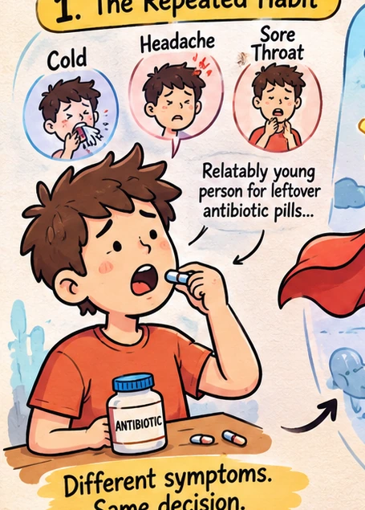

A SMALL HABIT
Different symptoms. Same decision.
A cold, a headache, a sore throat… and the same leftover antibiotic each time.

WITHOUT MEDICAL ADVICE
✳
✦
Antibiotics do not treat viral illnesses such as the common cold.